2023 Advanced Higher Computing Science marking instructions
Source: Scottish Qualifications Authority (SQA) / Qualifications Scotland. This is a StemInteract HTML companion, not an official HTML edition. Selectable text is supplied alongside original page images. Use the images or original PDF for equations, powers, fractions, vector notation, tables and diagrams; text extraction cannot fully preserve mathematical layout.
Jump to a question
PDF page 1
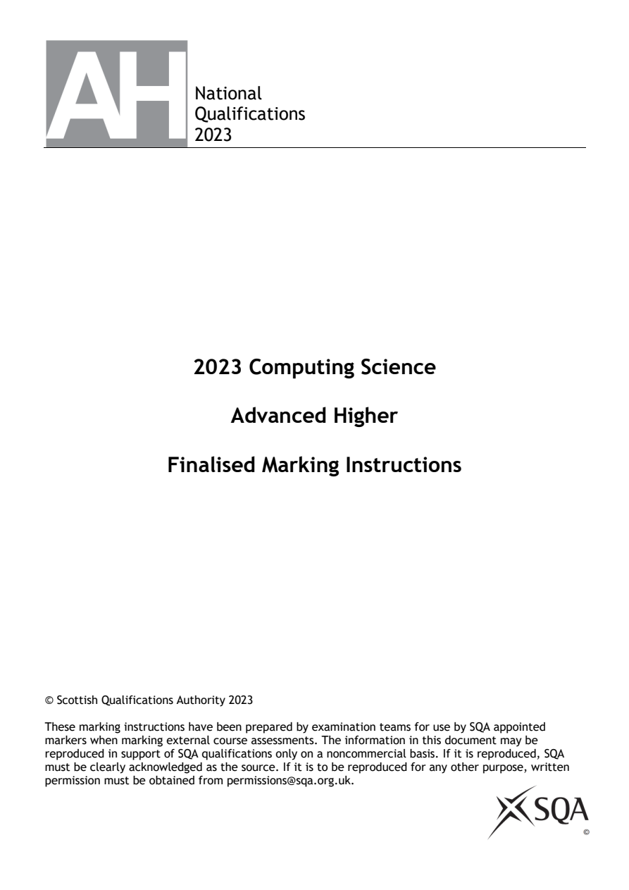
Selectable page text
National
Qualifications
2023
2023 Computing Science
Advanced Higher
Finalised Marking Instructions
© Scottish Qualifications Authority 2023
These marking instructions have been prepared by examination teams for use by SQA appointed
markers when marking external course assessments. The information in this document may be
reproduced in support of SQA qualifications only on a noncommercial basis. If it is reproduced, SQA
must be clearly acknowledged as the source. If it is to be reproduced for any other purpose, written
permission must be obtained from permissions@sqa.org.uk.PDF page 2
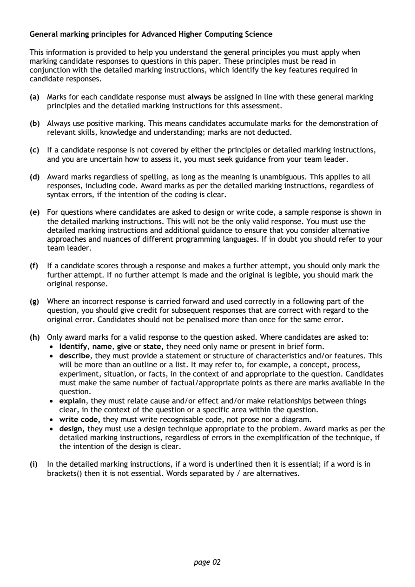
Selectable page text
General marking principles for Advanced Higher Computing Science
This information is provided to help you understand the general principles you must apply when
marking candidate responses to questions in this paper. These principles must be read in
conjunction with the detailed marking instructions, which identify the key features required in
candidate responses.
(a) Marks for each candidate response must always be assigned in line with these general marking
principles and the detailed marking instructions for this assessment.
(b) Always use positive marking. This means candidates accumulate marks for the demonstration of
relevant skills, knowledge and understanding; marks are not deducted.
(c) If a candidate response is not covered by either the principles or detailed marking instructions,
and you are uncertain how to assess it, you must seek guidance from your team leader.
(d) Award marks regardless of spelling, as long as the meaning is unambiguous. This applies to all
responses, including code. Award marks as per the detailed marking instructions, regardless of
syntax errors, if the intention of the coding is clear.
(e) For questions where candidates are asked to design or write code, a sample response is shown in
the detailed marking instructions. This will not be the only valid response. You must use the
detailed marking instructions and additional guidance to ensure that you consider alternative
approaches and nuances of different programming languages. If in doubt you should refer to your
team leader.
(f) If a candidate scores through a response and makes a further attempt, you should only mark the
further attempt. If no further attempt is made and the original is legible, you should mark the
original response.
(g) Where an incorrect response is carried forward and used correctly in a following part of the
question, you should give credit for subsequent responses that are correct with regard to the
original error. Candidates should not be penalised more than once for the same error.
(h) Only award marks for a valid response to the question asked. Where candidates are asked to:
• Identify, name, give or state, they need only name or present in brief form.
• describe, they must provide a statement or structure of characteristics and/or features. This
will be more than an outline or a list. It may refer to, for example, a concept, process,
experiment, situation, or facts, in the context of and appropriate to the question. Candidates
must make the same number of factual/appropriate points as there are marks available in the
question.
• explain, they must relate cause and/or effect and/or make relationships between things
clear, in the context of the question or a specific area within the question.
• write code, they must write recognisable code, not prose nor a diagram.
• design, they must use a design technique appropriate to the problem. Award marks as per the
detailed marking instructions, regardless of errors in the exemplification of the technique, if
the intention of the design is clear.
(i) In the detailed marking instructions, if a word is underlined then it is essential; if a word is in
brackets() then it is not essential. Words separated by / are alternatives.
page 02PDF page 3
Question 1Question 2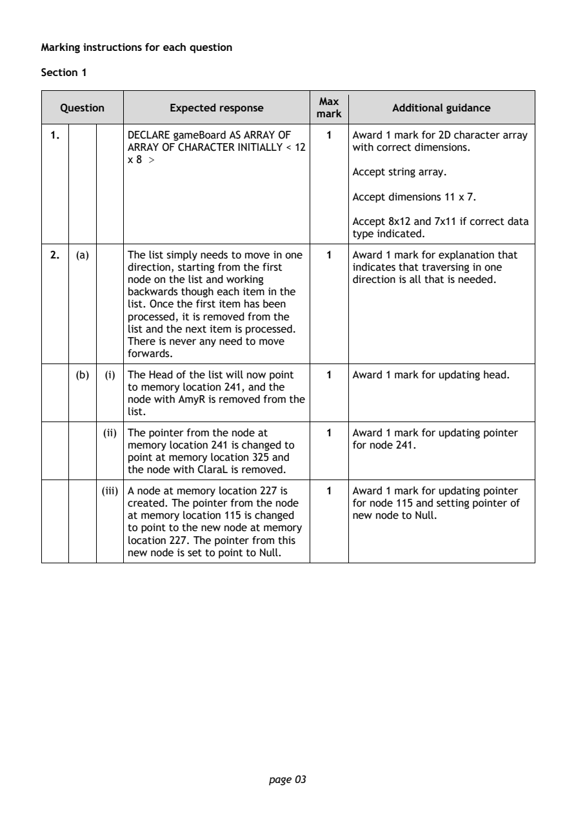
Selectable page text
Marking instructions for each question
Section 1
Max
Question Expected response Additional guidance
mark
1. DECLARE gameBoard AS ARRAY OF 1 Award 1 mark for 2D character array
ARRAY OF CHARACTER INITIALLY < 12 with correct dimensions.
x 8
>
Accept string array.
Accept dimensions 11 x 7.
Accept 8x12 and 7x11 if correct data
type indicated.
2. (a) The list simply needs to move in one 1 Award 1 mark for explanation that
direction, starting from the first indicates that traversing in one
node on the list and working direction is all that is needed.
backwards though each item in the
list. Once the first item has been
processed, it is removed from the
list and the next item is processed.
There is never any need to move
forwards.
(b) (i) The Head of the list will now point 1 Award 1 mark for updating head.
to memory location 241, and the
node with AmyR is removed from the
list.
(ii) The pointer from the node at 1 Award 1 mark for updating pointer
memory location 241 is changed to for node 241.
point at memory location 325 and
the node with ClaraL is removed.
(iii) A node at memory location 227 is 1 Award 1 mark for updating pointer
created. The pointer from the node for node 115 and setting pointer of
at memory location 115 is changed new node to Null.
to point to the new node at memory
location 227. The pointer from this
new node is set to point to Null.
page 03PDF page 4
Question 3Question 4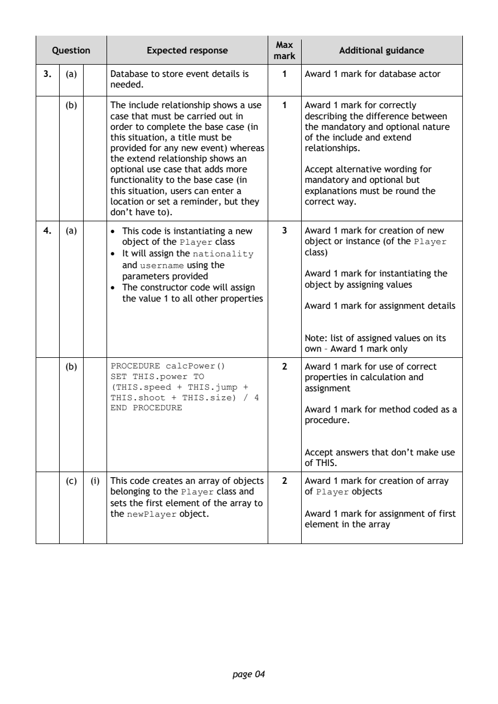
Selectable page text
Max
Question Expected response Additional guidance
mark
3. (a) Database to store event details is 1 Award 1 mark for database actor
needed.
(b) The include relationship shows a use 1 Award 1 mark for correctly
case that must be carried out in describing the difference between
order to complete the base case (in the mandatory and optional nature
this situation, a title must be of the include and extend
provided for any new event) whereas relationships.
the extend relationship shows an
optional use case that adds more Accept alternative wording for
functionality to the base case (in mandatory and optional but
this situation, users can enter a explanations must be round the
location or set a reminder, but they correct way.
don’t have to).
4. (a) • This code is instantiating a new 3 Award 1 mark for creation of new
object of the class object or instance (of the
Player Player
• It will assign the class)
nationality
and using the
username
Award 1 mark for instantiating the
parameters provided
object by assigning values
• The constructor code will assign
the value 1 to all other properties
Award 1 mark for assignment details
Note: list of assigned values on its
own – Award 1 mark only
(b) 2 Award 1 mark for use of correct
PROCEDURE calcPower()
properties in calculation and
SET THIS.power TO
(THIS.speed + THIS.jump + assignment
THIS.shoot + THIS.size) / 4
END PROCEDURE Award 1 mark for method coded as a
procedure.
Accept answers that don’t make use
of THIS.
(c) (i) This code creates an array of objects 2 Award 1 mark for creation of array
belonging to the class and of objects
Player Player
sets the first element of the array to
the object. Award 1 mark for assignment of first
newPlayer
element in the array
page 04PDF page 5
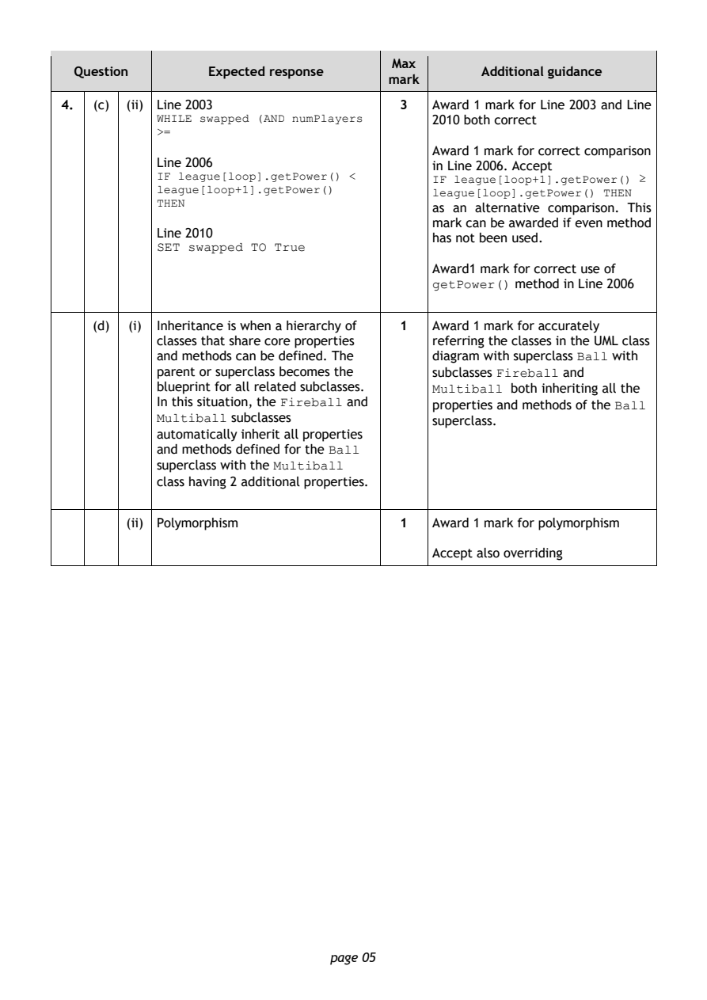
Selectable page text
Max
Question Expected response Additional guidance
mark
4. (c) (ii) Line 2003 3 Award 1 mark for Line 2003 and Line
WHILE swapped (AND numPlayers 2010 both correct
>=
Award 1 mark for correct comparison
Line 2006 in Line 2006. Accept
IF league[loop].getPower() < IF league[loop+1].getPower() ≥
league[loop+1].getPower() league[loop].getPower() THEN
THEN as an alternative comparison. This
mark can be awarded if even method
Line 2010
has not been used.
SET swapped TO True
Award1 mark for correct use of
method in Line 2006
getPower()
(d) (i) Inheritance is when a hierarchy of 1 Award 1 mark for accurately
classes that share core properties referring the classes in the UML class
and methods can be defined. The diagram with superclass with
Ball
parent or superclass becomes the subclasses and
Fireball
blueprint for all related subclasses. both inheriting all the
Multiball
In this situation, the Fireball and properties and methods of the Ball
Multiball subclasses superclass.
automatically inherit all properties
and methods defined for the
Ball
superclass with the
Multiball
class having 2 additional properties.
(ii) Polymorphism 1 Award 1 mark for polymorphism
Accept also overriding
page 05PDF page 6
Question 5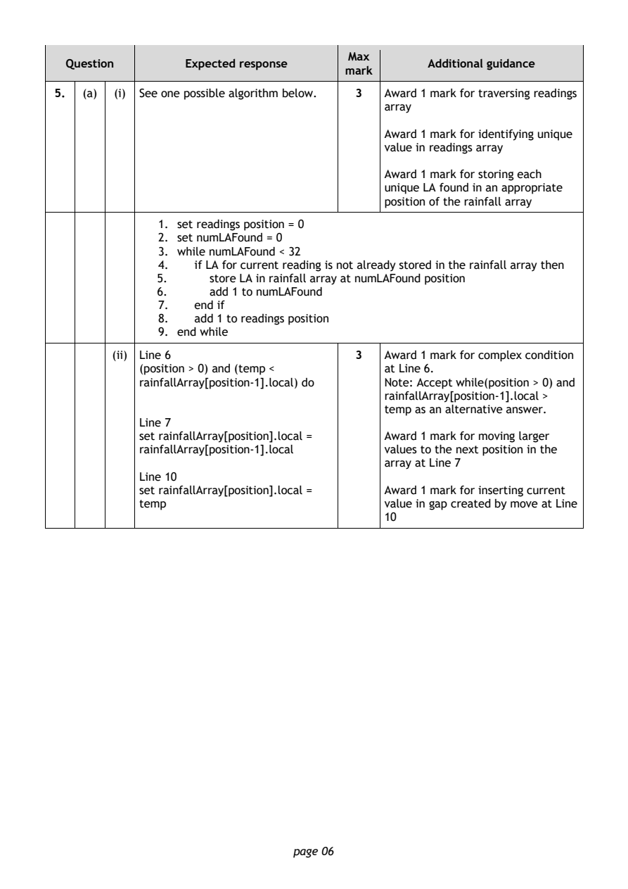
Selectable page text
Max
Question Expected response Additional guidance
mark
5. (a) (i) See one possible algorithm below. 3 Award 1 mark for traversing readings
array
Award 1 mark for identifying unique
value in readings array
Award 1 mark for storing each
unique LA found in an appropriate
position of the rainfall array
1. set readings position = 0
2. set numLAFound = 0
3. while numLAFound < 32
4. if LA for current reading is not already stored in the rainfall array then
5. store LA in rainfall array at numLAFound position
6. add 1 to numLAFound
7. end if
8. add 1 to readings position
9. end while
(ii) Line 6 3 Award 1 mark for complex condition
(position > 0) and (temp < at Line 6.
rainfallArray[position-1].local) do Note: Accept while(position > 0) and
rainfallArray[position-1].local >
temp as an alternative answer.
Line 7
set rainfallArray[position].local = Award 1 mark for moving larger
rainfallArray[position-1].local values to the next position in the
array at Line 7
Line 10
set rainfallArray[position].local = Award 1 mark for inserting current
temp value in gap created by move at Line
10
page 06PDF page 7
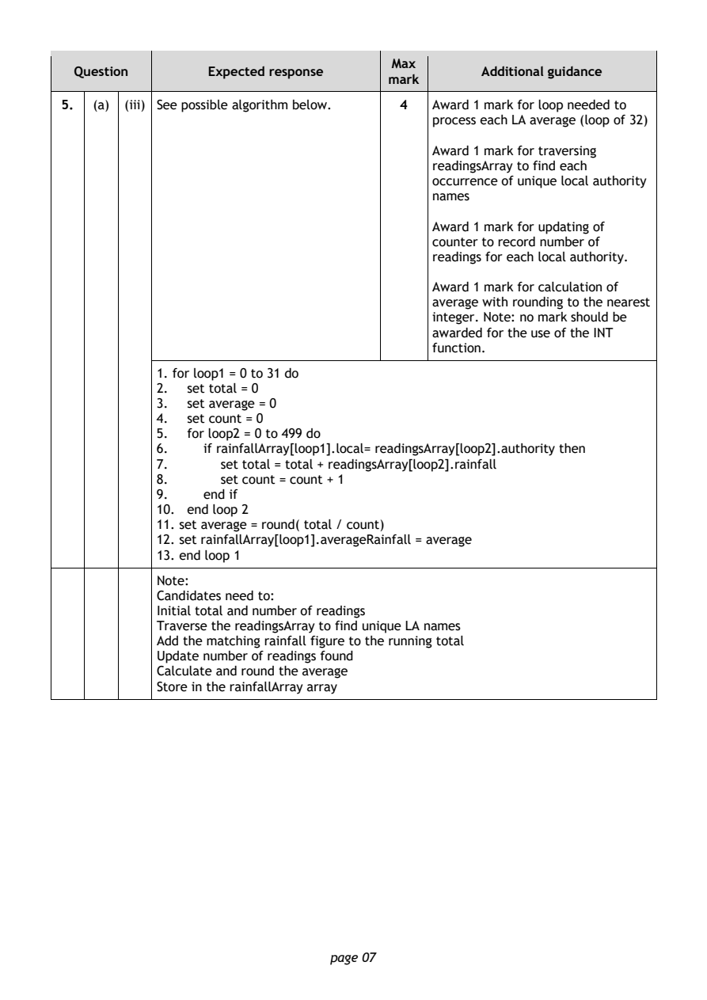
Selectable page text
Max
Question Expected response Additional guidance
mark
5. (a) (iii) See possible algorithm below. 4 Award 1 mark for loop needed to
process each LA average (loop of 32)
Award 1 mark for traversing
readingsArray to find each
occurrence of unique local authority
names
Award 1 mark for updating of
counter to record number of
readings for each local authority.
Award 1 mark for calculation of
average with rounding to the nearest
integer. Note: no mark should be
awarded for the use of the INT
function.
1. for loop1 = 0 to 31 do
2. set total = 0
3. set average = 0
4. set count = 0
5. for loop2 = 0 to 499 do
6. if rainfallArray[loop1].local= readingsArray[loop2].authority then
7. set total = total + readingsArray[loop2].rainfall
8. set count = count + 1
9. end if
10. end loop 2
11. set average = round( total / count)
12. set rainfallArray[loop1].averageRainfall = average
13. end loop 1
Note:
Candidates need to:
Initial total and number of readings
Traverse the readingsArray to find unique LA names
Add the matching rainfall figure to the running total
Update number of readings found
Calculate and round the average
Store in the rainfallArray array
page 07PDF page 8
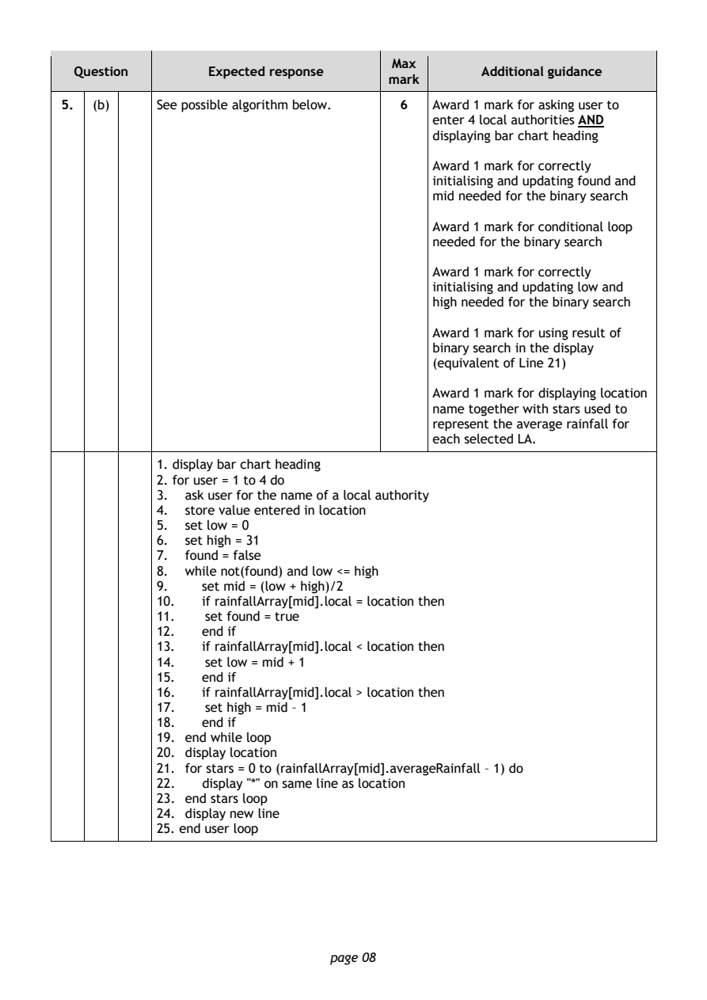
Selectable page text
Max
Question Expected response Additional guidance
mark
5. (b) See possible algorithm below. 6 Award 1 mark for asking user to
enter 4 local authorities AND
displaying bar chart heading
Award 1 mark for correctly
initialising and updating found and
mid needed for the binary search
Award 1 mark for conditional loop
needed for the binary search
Award 1 mark for correctly
initialising and updating low and
high needed for the binary search
Award 1 mark for using result of
binary search in the display
(equivalent of Line 21)
Award 1 mark for displaying location
name together with stars used to
represent the average rainfall for
each selected LA.
1. display bar chart heading
2. for user = 1 to 4 do
3. ask user for the name of a local authority
4. store value entered in location
5. set low = 0
6. set high = 31
7. found = false
8. while not(found) and low <= high
9. set mid = (low + high)/2
10. if rainfallArray[mid].local = location then
11. set found = true
12. end if
13. if rainfallArray[mid].local < location then
14. set low = mid + 1
15. end if
16. if rainfallArray[mid].local > location then
17. set high = mid – 1
18. end if
19. end while loop
20. display location
21. for stars = 0 to (rainfallArray[mid].averageRainfall – 1) do
22. display "*" on same line as location
23. end stars loop
24. display new line
25. end user loop
page 08PDF page 9
Question 6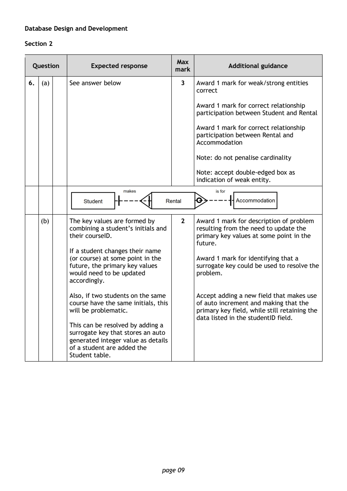
Selectable page text
Database Design and Development
Section 2
Max
Question Expected response Additional guidance
mark
6. (a) See answer below 3 Award 1 mark for weak/strong entities
correct
Award 1 mark for correct relationship
participation between Student and Rental
Award 1 mark for correct relationship
participation between Rental and
Accommodation
Note: do not penalise cardinality
Note: accept double-edged box as
indication of weak entity.
(b) The key values are formed by 2 Award 1 mark for description of problem
combining a student’s initials and resulting from the need to update the
their courseID. primary key values at some point in the
future.
If a student changes their name
(or course) at some point in the Award 1 mark for identifying that a
future, the primary key values surrogate key could be used to resolve the
would need to be updated problem.
accordingly.
Also, if two students on the same Accept adding a new field that makes use
course have the same initials, this of auto increment and making that the
will be problematic. primary key field, while still retaining the
data listed in the studentID field.
This can be resolved by adding a
surrogate key that stores an auto
generated integer value as details
of a student are added the
Student table.
page 09PDF page 10
Question 7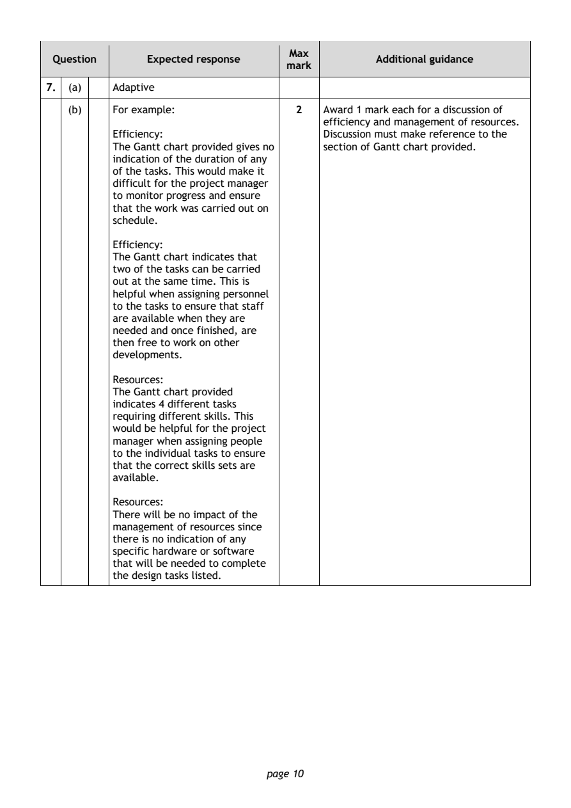
Selectable page text
Max
Question Expected response Additional guidance
mark
7. (a) Adaptive
(b) For example: 2 Award 1 mark each for a discussion of
efficiency and management of resources.
Efficiency: Discussion must make reference to the
The Gantt chart provided gives no section of Gantt chart provided.
indication of the duration of any
of the tasks. This would make it
difficult for the project manager
to monitor progress and ensure
that the work was carried out on
schedule.
Efficiency:
The Gantt chart indicates that
two of the tasks can be carried
out at the same time. This is
helpful when assigning personnel
to the tasks to ensure that staff
are available when they are
needed and once finished, are
then free to work on other
developments.
Resources:
The Gantt chart provided
indicates 4 different tasks
requiring different skills. This
would be helpful for the project
manager when assigning people
to the individual tasks to ensure
that the correct skills sets are
available.
Resources:
There will be no impact of the
management of resources since
there is no indication of any
specific hardware or software
that will be needed to complete
the design tasks listed.
page 10PDF page 11
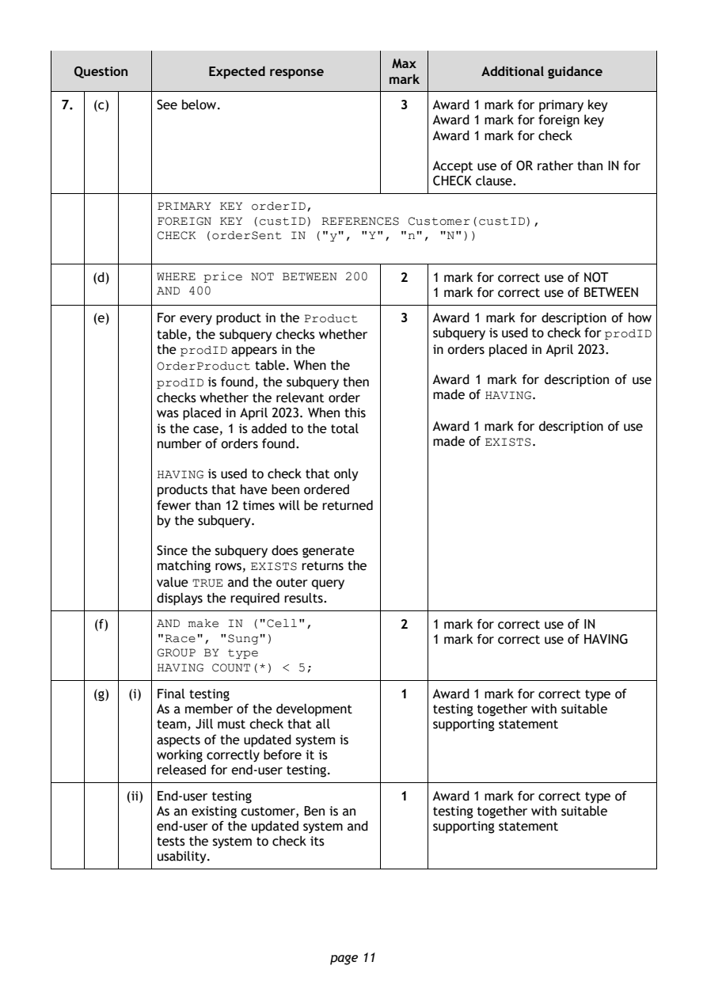
Selectable page text
Max
Question Expected response Additional guidance
mark
7. (c) See below. 3 Award 1 mark for primary key
Award 1 mark for foreign key
Award 1 mark for check
Accept use of OR rather than IN for
CHECK clause.
PRIMARY KEY orderID,
FOREIGN KEY (custID) REFERENCES Customer(custID),
CHECK (orderSent IN ("y", "Y", "n", "N"))
(d) 2 1 mark for correct use of NOT
WHERE price NOT BETWEEN 200
1 mark for correct use of BETWEEN
AND 400
(e) For every product in the 3 Award 1 mark for description of how
Product
table, the subquery checks whether subquery is used to check for
prodID
the appears in the in orders placed in April 2023.
prodID
table. When the
OrderProduct
is found, the subquery then Award 1 mark for description of use
prodID
checks whether the relevant order made of HAVING .
was placed in April 2023. When this
is the case, 1 is added to the total Award 1 mark for description of use
number of orders found. made of EXISTS .
is used to check that only
HAVING
products that have been ordered
fewer than 12 times will be returned
by the subquery.
Since the subquery does generate
matching rows, returns the
EXISTS
value and the outer query
TRUE
displays the required results.
(f) 2 1 mark for correct use of IN
AND make IN ("Cell",
1 mark for correct use of HAVING
"Race", "Sung")
GROUP BY type
HAVING COUNT(*) < 5;
(g) (i) Final testing 1 Award 1 mark for correct type of
As a member of the development testing together with suitable
team, Jill must check that all supporting statement
aspects of the updated system is
working correctly before it is
released for end-user testing.
(ii) End-user testing 1 Award 1 mark for correct type of
As an existing customer, Ben is an testing together with suitable
end-user of the updated system and supporting statement
tests the system to check its
usability.
page 11PDF page 12
Question 8Question 9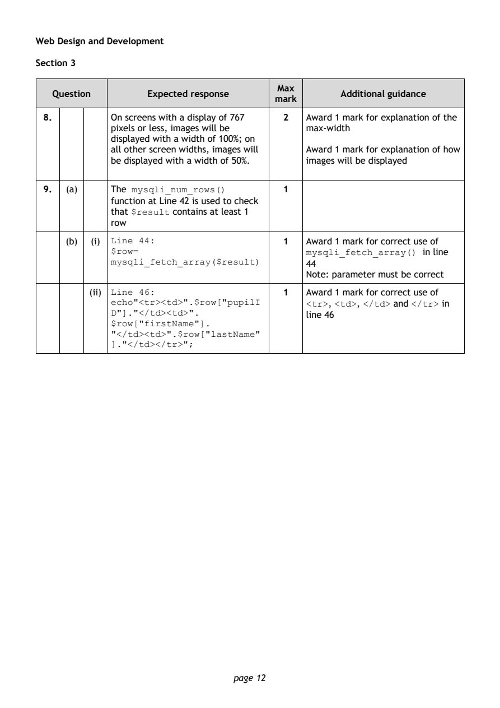
Selectable page text
Web Design and Development
Section 3
Max
Question Expected response Additional guidance
mark
8. On screens with a display of 767 2 Award 1 mark for explanation of the
pixels or less, images will be max-width
displayed with a width of 100%; on
all other screen widths, images will Award 1 mark for explanation of how
be displayed with a width of 50%. images will be displayed
9. (a) The 1
mysqli_num_rows()
function at Line 42 is used to check
that contains at least 1
$result
row
(b) (i) 1 Award 1 mark for correct use of
Line 44:
in line
$row= mysqli_fetch_array()
mysqli_fetch_array($result) 44
Note: parameter must be correct
(ii) 1 Award 1 mark for correct use of
Line 46:
, , and in
echo"<tr><td>".$row["pupilI <tr> <td> </td> </tr>
D"]."</td><td>". line 46
$row["firstName"].
"</td><td>".$row["lastName"
]."</td></tr>";
page 12PDF page 13
Question 10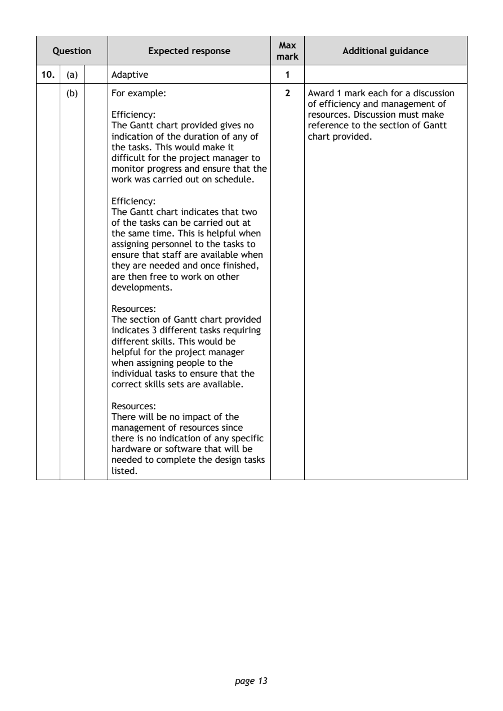
Selectable page text
Max
Question Expected response Additional guidance
mark
10. (a) Adaptive 1
(b) For example: 2 Award 1 mark each for a discussion
of efficiency and management of
Efficiency: resources. Discussion must make
The Gantt chart provided gives no reference to the section of Gantt
indication of the duration of any of chart provided.
the tasks. This would make it
difficult for the project manager to
monitor progress and ensure that the
work was carried out on schedule.
Efficiency:
The Gantt chart indicates that two
of the tasks can be carried out at
the same time. This is helpful when
assigning personnel to the tasks to
ensure that staff are available when
they are needed and once finished,
are then free to work on other
developments.
Resources:
The section of Gantt chart provided
indicates 3 different tasks requiring
different skills. This would be
helpful for the project manager
when assigning people to the
individual tasks to ensure that the
correct skills sets are available.
Resources:
There will be no impact of the
management of resources since
there is no indication of any specific
hardware or software that will be
needed to complete the design tasks
listed.
page 13PDF page 14
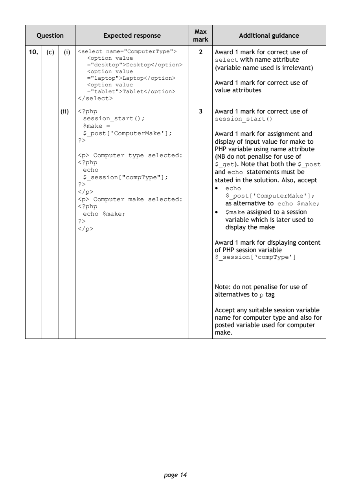
Selectable page text
Max
Question Expected response Additional guidance
mark
10. (c) (i) <select name="ComputerType"> 2 Award 1 mark for correct use of
<option value with name attribute
select
="desktop">Desktop</option> (variable name used is irrelevant)
<option value
="laptop">Laptop</option>
Award 1 mark for correct use of
<option value
value attributes
="tablet">Tablet</option>
</select>
(ii) 3 Award 1 mark for correct use of
<?php
session_start(); session_start()
$make =
$_post['ComputerMake']; Award 1 mark for assignment and
?> display of input value for make to
PHP variable using name attribute
<p> Computer type selected: (NB do not penalise for use of
<?php ). Note that both the
$_get $_post
echo and statements must be
echo
$_session["compType"]; stated in the solution. Also, accept
?> •
echo
</p>
$_post['ComputerMake'];
<p> Computer make selected: as alternative to
echo $make;
<?php
• assigned to a session
echo $make; $make
variable which is later used to
?>
display the make
</p>
Award 1 mark for displaying content
of PHP session variable
$_session[‘compType’]
Note: do not penalise for use of
alternatives to tag
p
Accept any suitable session variable
name for computer type and also for
posted variable used for computer
make.
page 14PDF page 15
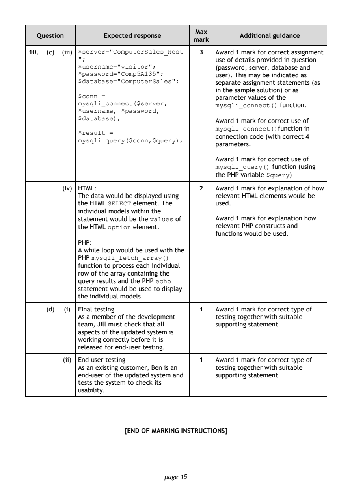
Selectable page text
Max
Question Expected response Additional guidance
mark
10. (c) (iii) 3 Award 1 mark for correct assignment
$server="ComputerSales_Host
use of details provided in question
";
$username="visitor"; (password, server, database and
$password="Comp5A135"; user). This may be indicated as
$database="ComputerSales"; separate assignment statements (as
in the sample solution) or as
$conn = parameter values of the
mysqli_connect($server, function.
mysqli_connect()
$username, $password,
$database); Award 1 mark for correct use of
function in
mysqli_connect()
$result = connection code (with correct 4
mysqli_query($conn,$query); parameters.
Award 1 mark for correct use of
function (using
mysqli_query()
the PHP variable )
$query
(iv) HTML: 2 Award 1 mark for explanation of how
The data would be displayed using relevant HTML elements would be
the HTML element. The used.
SELECT
individual models within the
statement would be the of Award 1 mark for explanation how
values
the HTML element. relevant PHP constructs and
option
functions would be used.
PHP:
A while loop would be used with the
PHP
mysqli_fetch_array()
function to process each individual
row of the array containing the
query results and the PHP
echo
statement would be used to display
the individual models.
(d) (i) Final testing 1 Award 1 mark for correct type of
As a member of the development testing together with suitable
team, Jill must check that all supporting statement
aspects of the updated system is
working correctly before it is
released for end-user testing.
(ii) End-user testing 1 Award 1 mark for correct type of
As an existing customer, Ben is an testing together with suitable
end-user of the updated system and supporting statement
tests the system to check its
usability.
[END OF MARKING INSTRUCTIONS]
page 15